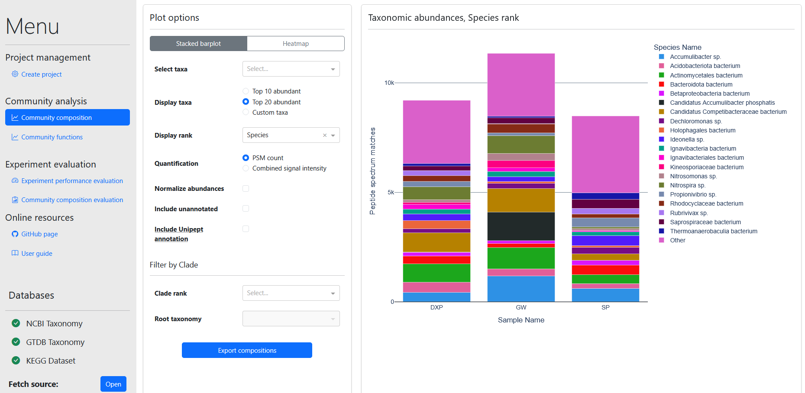

Community composition visualization
MetaPepView provides two modules for taxonomy visualization of microbial communities: Community composition and Evaluate community composition. Community composition is the main module for taxonomy composition analysis. It allows visualization of taxonomy composition and comparison of compositions between all samples within the project.
Additional parts of the Community composition module, as well as the Evaluate community composition module, focus on evaluation of taxonomy composition correctness and identification of potential quantification biases.
Community composition module
The Community composition module visualizes taxonomy compositions for all samples in the project. Taxonomy abundances are quantified based on peptide spectrum match (PSM) counts or summed signal intensities provided from the metaproteomics data. In addition, there are a range of options to rescale/normalize abundances, to change the taxonomy level to visualize, and to zoom into a particular taxonomy group. Composition can be visualized either as stacked bar chart or heatmap format.

A range of options are provided to modify the visualization:
- Select taxa: Select specific taxonomies to display (Only if Taxa display type is set to Custom taxa)
- Taxa display type: Specify what taxonomies to display: Top 10/20 abundant taxonomies, or user specified Custom taxa (Taxa provided in Select taxa)
- Display rank: Select taxonomy level to display.
- Quantification: Quantify taxonomy groups as summed PSM counts or as summed signal intensities.
- Normalize abundances: Check to display taxonomies as fraction of total composition per sample.
- Include unannotated: Add peptides without annotation (at specified taxonomy rank) as separate "Undefined" category in the composition.
- Allow global annotation: Supplement peptide sequences without taxonomy annotation from the user supplied taxonomy map, with potential Unipept matched taxonomy annotation. Requires the Annotate peptides to Unipept option to be checked for some samples in the Taxonomy annotation settings from the import module.
- Filter by Clade: Select a specific taxonomy group to visualize; Specify a Root taxonomy group belonging to the selected Clade rank level, and only "offspring" taxonomy groups belonging to the root taxonomy will be visualized. Note: Display rank should be at a lower level than the Clade rank.
- Export taxonomy: Download a CSV file of taxonomy abundances at every rank (level) from all samples for manual processing. Abundance format depends on selected options.
Info
The main method how Allow global annotation supplements extra taxonomy information to the composition is by including taxonomy annotation from de novo identified peptides to the composition. If the user provided taxonomy map represents the protein accessions from metaproteomics DB search data well, (almost) all DB search peptides are expected to have at least some taxonomy annotation. Thus, taxonomy information can only be extended by including de novo identified peptides that were annotated from Unipept.
Allow global annotation is usually not recommended to check for regular taxonomy profiling. As combination of DB search annotation and Unipept annotation with de novo peptides may introduce biases. Also, if DB search matching was done with good quality protein databases, this option is expected to have minimal effect on the composition (Except for a strong increase in "Undefined" fraction).
Cases where this option may be useful is: Include samples to the taxonomy visualization for which no DB search data and/or taxonomy map data was provided, only Unipept annotation. In addition, for bad quality protein databases used for DB search matching, this option may provide a significant fraction of extra taxonomy information.
Profiling peptide uniqueness in taxonomy group: Taxonomic drop-off
MetaPepView provides several tools to identify/evaluate potential biases in the observed community composition, these are mainly described in the Evaluate community composition section. However, one tool for evaluation of taxonomy bias is present in the Community composition module: the drop-off analysis.
The taxonomy drop-off provides an estimate of peptide uniqueness for a taxonomy group relative to the total community. Peptide uniqueness has a large impact on the quantification of a taxonomy group, as only peptides unique to that group can be assigned to it and included in quantification. Non-unique peptides (assigned to multiple taxonomies) will be assigned to a higher-level Last Common Ancestor (LCA) taxonomy. Therefore, taxa with few unique peptide sequences will see only a small fraction of its proteome be counted towards its abundance.
The fraction of unique peptides may differ greatly between taxonomy groups. For example, because of presence/absence of closely related taxa in the community. This can translate into a bias in observed taxonomy abundance, where taxa with fewer unique peptides will be underrepresented in the community. To estimate this bias, we can compare the peptide drop-off observed for the lineage of the taxonomy group to the average drop-off from the taxonomy root down to the rank (level) of the taxonomy group. For a single taxonomy group (and a single sample), we can observe this drop-off by clicking the taxonomy category (a single colored bar) in the stacked bar chart. Then, a drop-off chart will appear.

Here, we observe a stacked bar chart with bars at every rank of the lineage for the selected taxonomy group. At every rank, we observe the number of PSM's (or total Area) from the parent rank that are assigned to the taxonomy group in our lineage (blue bar), to other taxonomy groups in the same rank (orange bars, hover mouse over the bars for taxonomy names), and the number of PSM's that lack annotation at that rank (the drop-off) (red bar). The taxonomy drop-off for the lineage (Lineage drop in the interface) is calculated by combining the drop from parent to child rank for the complete lineage down to the selected taxonomy group with the following function. For the drop-off from root to the selected taxonomy:
Here, \(drop_n\) is the fraction of PSM's without taxonomy annotation at rank \(n\) (the red bar), for which the parent rank is part of the lineage. The average community drop-off (from root to the rank of the selected taxonomy) is calculated with:
A lineage drop-off that is higher than the community average drop-off implies that the taxonomy group is underrepresented in the community, while a lower lineage drop-off implies overrepresentation.